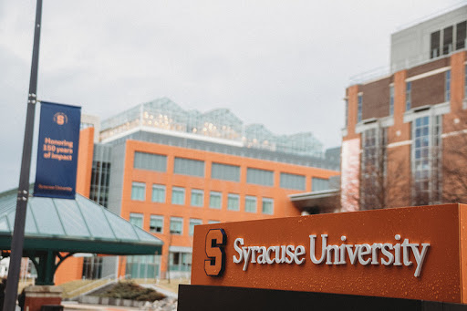
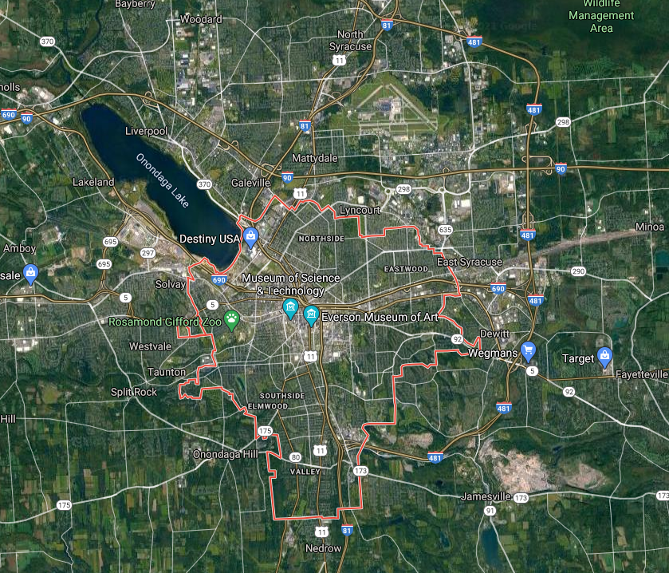

Overview

Syracuse is a city in and the county seat of Onondaga County, New York, United States. It is the fifth-most populous city in the state of New York following New York City, Buffalo, Rochester, and Yonkers.
At the 2010 census, the city population was 145,252, and its metropolitan area had a population of 662,577. It is the economic and educational hub of Central New York, a region with over one million inhabitants. Syracuse is also well-provided with convention sites, with a downtown convention complex. Syracuse was named after the classical Greek city Syracuse (Siracusa in Italian), a city on the eastern coast of the Italian island of Sicily.
The city has functioned as a major crossroads over the last two centuries, first between the Erie Canal and its branch canals, then of the railway network. Today, Syracuse is at the intersection of Interstates 81 and 90. Its airport is the largest in the region. Syracuse is home to Syracuse University, a major research university; Le Moyne College, a Jesuit liberal arts college; SUNY Upstate Medical University, a public medical school; and SUNY College of Environmental Science & Forestry, a public university focusing on forestry, the environment, and natural resources.
History
French missionaries were the first Europeans to come to this area, arriving to work with the Native Americans in the 1600s. At the invitation of the Onondaga Nation, one of the five nations of the Iroquois Confederacy, a group of Jesuit priests, soldiers, and coureurs des bois (including Pierre Esprit Radisson) set up a mission, known as Sainte Marie among the Iroquois, or Ste. Marie de Gannentaha, on the northeast shore of Onondaga Lake.
Jesuit missionaries reported salty brine springs around the southern end of what they referred to as "Salt Lake", known today as Onondaga Lake in honor of the historic tribe. French fur traders established trade throughout the New York area among the Iroquois. Dutch and English colonists also were traders, and the English nominally claimed the area, from their upstate base at Albany, New York. During the American Revolutionary War, the highly decentralized Iroquois divided into groups and bands that supported the British, and two tribes that supported the American-born rebels, or patriots.
Settlers came into central and western New York from eastern parts of the state and New England after the American Revolutionary War and various treaties with and land sales by Native American tribes. The subsequent designation of this area by the state of New York as the Onondaga Salt Springs Reservation provided the basis for commercial salt production. Such production took place from the late 1700s through the early 1900s. Brine from wells that tapped into halite (common salt) beds in the Salina shale near Tully, New York, 15 miles south of the city, was developed in the 19th century. It is the north-flowing brine from Tully that is the source of salt for the "salty springs" found along the shoreline of Onondaga Lake. The rapid development of this industry in the 18th and 19th centuries led to the nicknaming of this area as "The Salt City".
The original settlement of Syracuse was a conglomeration of several small towns and villages and was not recognized with a post office by the United States Government. Establishing the post office was delayed because the settlement did not have a name. Joshua Forman wanted to name the village Corinth. When John Wilkinson applied for a post office in that name in 1820, it was denied because the same name was already in use in Saratoga County, New York. Having read a poetical description of Syracuse, Sicily (Siracusa), Wilkinson saw similarities to the lake and salt springs of this area, which had both "salt and freshwater mingling together". On February 4, 1820, Wilkinson proposed the name "Syracuse" to a group of fellow townsmen; it became the name of the village and the new post office.
The first Solvay Process Company plant in the United States was erected on the southwestern shore of Onondaga Lake in 1884. The village was called Solvay to commemorate the inventor, Ernest Solvay. In 1861, he developed the ammonia-soda process for the manufacture of soda ash (anhydrous sodium carbonate) from brine wells dug in the southern end of Tully valley (as a source of sodium chloride) and limestone (as a source of calcium carbonate). The process was an improvement over the earlier Leblanc process. The Syracuse Solvay plant was the incubator for a large chemical industry complex owned by Allied Signal in Syracuse. While this industry stimulated development and provided many jobs in Syracuse, it left Onondaga Lake as the most polluted in the nation.
The salt industry declined after the Civil War, but a new manufacturing industry arose in its place. Throughout the late 1800s and early 1900s, numerous businesses and stores were established, including the Franklin Automobile Company, which produced the first air-cooled engine in the world; the Century Motor Vehicle Company; the Smith Corona company; and the Craftsman Workshops, the center of Gustav Stickley's handmade furniture empire.
The Geneva Medical College was founded in 1834. It is now known as Upstate Medical University, one of four medical colleges in the State University of New York system, and one of only five medical schools in the state north of New York City.
On March 24, 1870, Syracuse University was founded. The State of New York granted the new university its own charter, independent of Genesee College, which had unsuccessfully tried to move to Syracuse the year before. The university was founded as coeducational. President Peck stated at the opening ceremonies, "The conditions of admission shall be equal to all persons... there shall be no invidious discrimination here against woman.... brains and heart shall have a fair chance... " Syracuse implemented this policy and attracted a high proportion of women students. In the College of Liberal Arts, the ratio between male and female students during the 19th century was approximately even. The College of Fine Arts was predominantly female, and a low ratio of women enrolled in the College of Medicine and the College of Law.
The first New York State Fair was held in Syracuse in 1841. Between 1842 and 1889, the Fair was held among 11 New York cities before finding a permanent home in Syracuse. It has been an annual event since then, except between 1942 and 1947, when the grounds were used as a military base during World War II and in 2020 due to the outbreak of the COVID-19 pandemic.
Geography
Syracuse is located at 43°2′49″N 76°8′40″W (43.046899, -76.144423). It is located about 87 miles (140 km) east of Rochester, 150 miles (240 km) east of Buffalo, and 145 miles (230 km) west of the state capital Albany. It is also the halfway point between New York City and Toronto, about 245 miles (390 km) from each, Toronto to the northwest and NYC to the southeast.
According to the United States Census Bureau, the city has a total area of 66 square kilometres (25.6 square miles), of which 65 square kilometres (25.1 square miles) is land and 1.6 square kilometres (0.6 square miles) (2.15%) water.
The city developed at the northeast corner of the Finger Lakes region. The city has many neighborhoods that were originally independent villages, which joined the city over the years. Although the central part of Syracuse is flat, many of its neighborhoods are on small hills such as University Hill and Tipperary Hill. Land to the north of Syracuse is generally flat, while land to the south is hilly.
About 27 percent of Syracuse's land area is covered by 890,000 trees — a higher percentage than in Albany, Rochester or Buffalo. The Labor Day Storm of 1998 was a derecho that destroyed approximately 30,000 trees. The sugar maple accounts for 14.2 percent of Syracuse's trees, followed by the Northern white cedar (9.8 percent) and the European buckthorn (6.8 percent). The most common street tree is the Norway maple (24.3 percent), followed by the honey locust (9.3 percent).
The densest tree cover in Syracuse is in the two Valley neighborhoods, where 46.6 percent of the land is covered by trees. The lowest tree cover percentage is found in the densely developed downtown, which has only 4.6 percent trees.
Demographics
As of the census of 2010, there were 145,170 people, 57,355 households, and 28,455 families residing in the city. The racial makeup of the city was 56.0% White, 29.5% African American, 1.1% Native American, 5.5% Asian, 0.03% Pacific Islander, 2.7% from other races, and 5.1% from two or more races. Hispanic or Latino of any race were 8.3% of the population.
The largest ethnic ancestries include African (29.5%), Irish (12.4%), Italian (12.3%), German (9.6%), English (4.5%), and Polish (3.6%). Non-Hispanic Whites were 52.8% of the population in 2010, down from 87.2% in 1970. Suburbanization attracted residents outside the city, even as new immigrant and migrant groups increased.
There were 57,355 households, out of which 29% had children under the age of 18 living with them, 9.3% were married couples living together, 20.8% had a female householder with no husband present, and 50.4% were non-families. 38.4% of all households were made up of individuals, and 10.4% had someone living alone who was 65 years of age or older. The average household size was 2.31 and the average family size was 3.14.
In the city, the population was spread out, with 19% under the age of 15, 23% from 15 to 24, 25.6% from 25 to 44, 21.7% from 45 to 64, and 10.5% who were 65 years of age or older. The median age was 29.6 years. For every 100 females, there were 91 males. For every 100 females age 18 and over, there were 87.89 males.
According to the 2014 estimates from the American Community Survey, the median income for a household in the city was $31,566, and the median income for a family was $38,794. Males had a median income of $39,537 versus $33,983 for females. The per capita income for the city was $19,283. About 28.2% of families and 35.1% of the population were below the poverty line, including 50% of those under age 18 and 16.7% of those age 65 and over. As of 2017, the United States Census Bureau indicated an estimated population of 143,396.